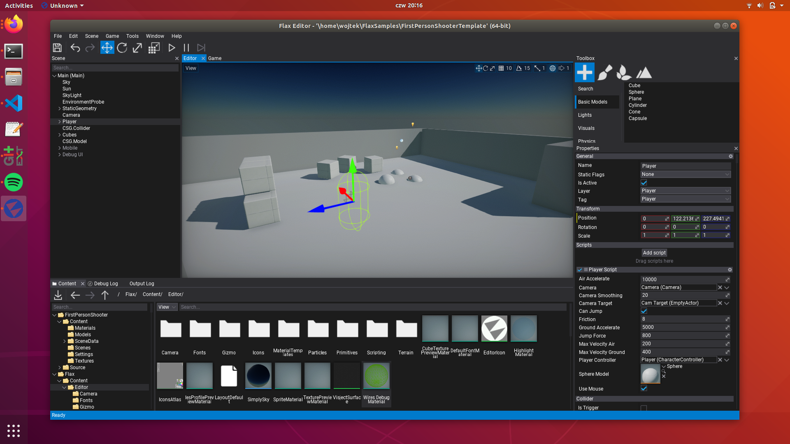
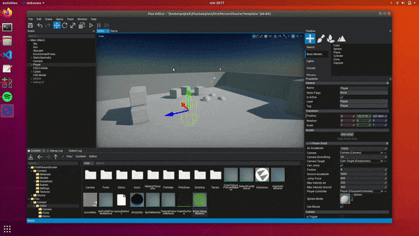

Editor on Linux

Download
You can get Flax from your Download page or compile it manually from the official source code repository.
The Editor executable is in folder Binaries/Editor/Linux/Development/FlaxEditor (you can use also Debug or Release configuration if you want).
Requirements
For developers using Flax Editor on Linux platforms the requirements are:
| Recommended | |
|---|---|
| Tested operating systems | Ubuntu 22 LTS |
| Processor | Quad-core or more, 2 GHz or faster |
| RAM | 4 GB or more |
| Hard drive space | 1 GB minimum |
| GPU | Vulkan required |
Flax Editor needs:
curllib on the system:
apt-get install -y curl libcurl4-gnutls-dev
.Net 7 SDK(https://dotnet.microsoft.com/en-us/download/dotnet/7.0). Setup can be verified with:
dotnet --version
*On Fedora you might need additional fix for invalid lib linkage: sudo ln -s /usr/lib64/libcurl.so.4 /usr/lib64/libcurl-gnutls.so.4.
GPU Drivers
Please ensure to have the latest GPU drivers installed. Helper links:
For information about supported platforms, see Platforms.
Command line access
Ig you're using laptop with integrated GPU and you want Flax to run on dedicated GPU for more power you can use command line switches to instruct engine to select a desire GPU based on the manufacturer:
| Option | Description |
|---|---|
-nvidia |
Selects Nvidia GPU. |
-amd |
Selects AMD GPU. |
-intel |
Selects Intel GPU. |
To learn more about command line switches see this documentation page.
Example command line to run Editor with custom options:
./FlaxEditor -project "<project-path>" -std -nvidia
New project
To create a new project to run Flax Editor executable as follows ./FlaxEditor -new -project <new_project_path> to create a new project inside a specified folder. Editor will generate a project template and open it.
Sample projects
To help you start using Flax pick the latest Flax Samples from https://github.com/FlaxEngine/FlaxSamples. This collection contains various example projects that showcase the engine features and can be used as a foundation for your future Flax projects. Have fun!
